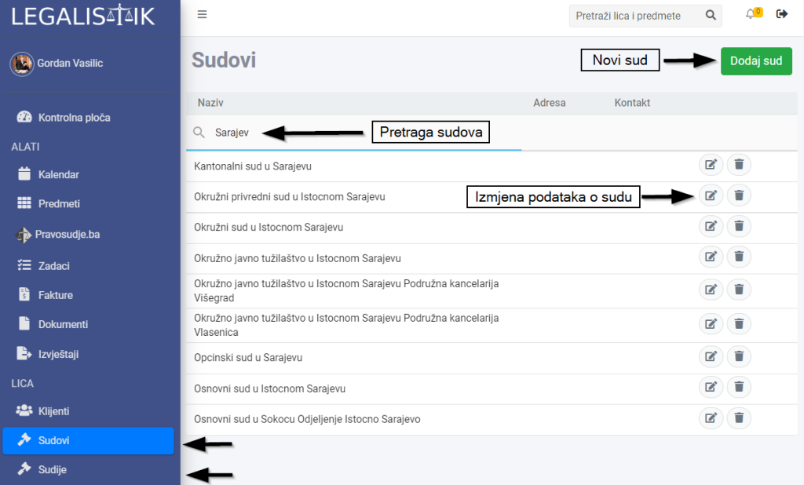
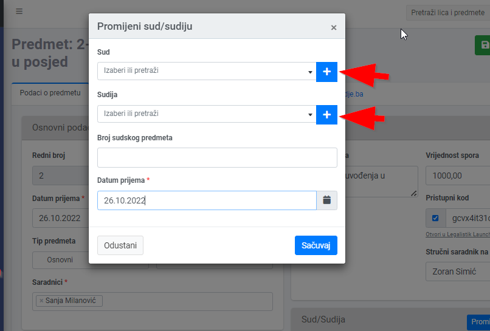
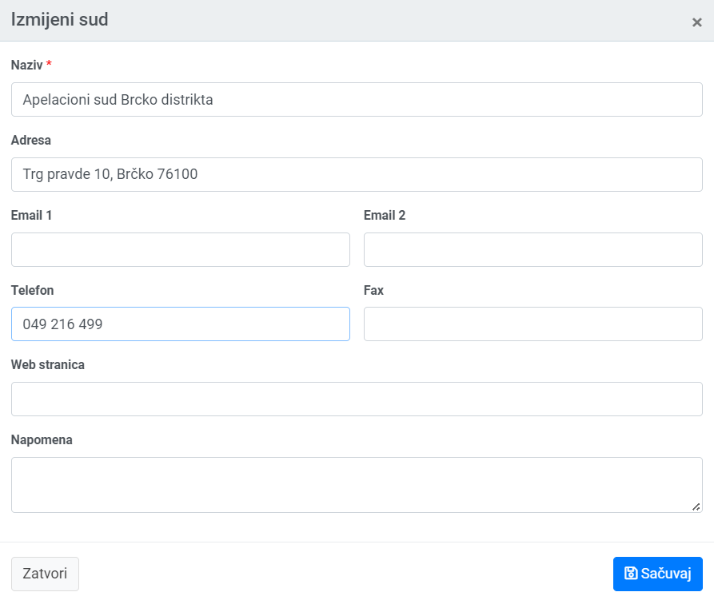

U Legalistik aplikaciju je već unesena većina postojećih sudova i trenutnih sudija. Sudove i sudije možete dodavati i mijenjati iz menija na lijevoj strani. Takođe, listu sudova možemo pretraživati i filtrirati u poljima ispod naziva kolone:

Sudove i sudije možemo dodavati i iz samog predmeta, tako što kliknemo na znak plus na desnoj strani:

Naziv suda je obavezno polje:
